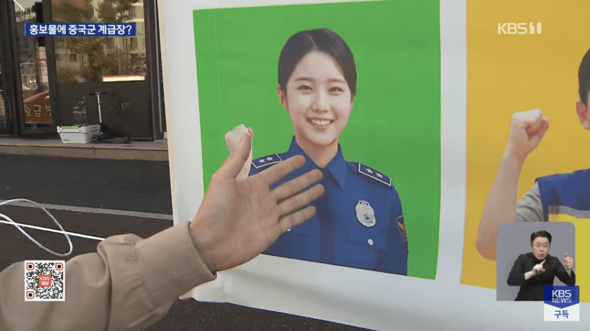
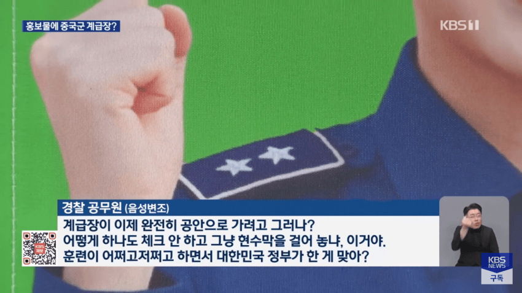
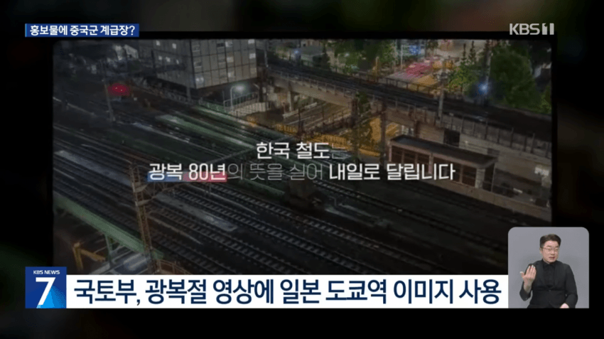

외주로 사람이 검수
돈이 듬
기안서 써야함
인공지능 딸각
돈이 안듬
기안서 안써도 됨
mz하다고 칭찬받음
저걸 공무원이 딸깍한다고? 얘네는 지들돈이 아니기때문에 딸깍조차 외주 시키는 놈들이야.
그냥 외주사가 딸깍한거 그냥 쓴거지
뭔소리야 ㅋㅋㅋㅋ 내 손이 아닌 남의 손을 빌리는 순간 신경쓸게 배는 많아지는데
돈과 시간 비용 때문이지
가끔 저런 찐빠 내지만 비용대비 훨씬 편리하니까
결과적으로 영상, 음악, 연기 쪽 일자리 제거하는데 성공!
평범한 환국 이잖아?
한국 철도. 광복 80주년의 뜻을 실어 도쿄를 달린다는 말은… 좀 짜릿한데이거
올????
공식명칭이 동경이 된 세계선인가 ㅋㅋㅋ
캬.. 만주벌판의 치안을 관리하는 경찰과 부산-대반 해저철도를 거쳐 동경까지 달리는 열차
ai 찐빠는 그렇다치고 광복절 영상에 일본이미지는 씨발련아 ㅋㅋㅋㅋㅋ
대동아공영...ㅋㅋㅋㅋㅋㅋㅋㅋㅋ
일을 좆같이 안하는건지
다른 속내가 있는건지
둘다 인건지 ㅈ나 모르겠군
개작살나겠네 담당자 ㅋㅋ
동중국 서일본 ㅋㅋㅋ
광고, 홍보에 ai좀 그만 썼으면 좋겠음. 불쾌한 골짜기 느낌 남
대동아공영권이냐???
저런데 대체 왜 AI를쓰냐 제대로 만들지도 못하더만